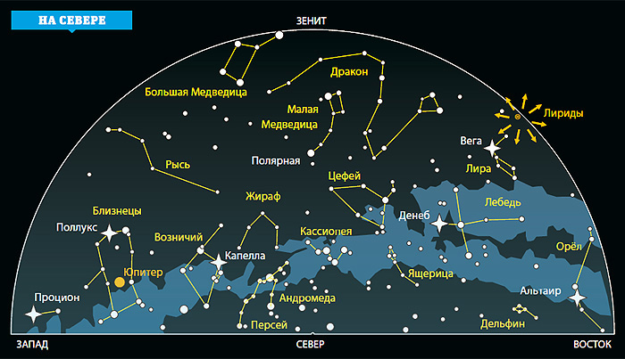

Основоположником теории графов является швейцарский математик Л. Эйлер, немецкий, швейцарский и российский математик, который внес огромный вклад в развитие математики. История появления графов связана с его именем. Его задача о Кенигсбергских мостах, при изучении с теорией графов, упоминается довольно часто ВВЕДЕНИЕ На полстраницы описать актуальность выбранной темы. Целью курсовой работы является разработка web-сайта для В связи с этим были поставленыс подключением файлов стилей css и скриптов js. 2. При разработке сайта придерживаться «Структуры документа и веб-сайта»: https://developer.mozilla.org/ru/docs/Learn/HTML/Introduction_to_HTML/Document_and_website_structure. 3. Все настройки элементов (цвет, стиль, размеры и т.д.) вынести в css-файл. 4. Структура каталога должна быть стандартизована. Главный файл – index.html, css файл(ы) – в подкаталоге css, рисунки – в подкаталоге images и т..д 5. Заголовок и Навигационное мен должны быть зафиксированы и не смещаться при прокрутке страницы. 6. При компоновке страницы использовать float, Flexbox или Grid Layout. Возможна и их комбинация в различных вариантах. 7. В html-файле использовать максимальное число различных элементов (тегов): заголовки, параграфы, выделение текста, таблицы, списки, ссылки, рисунки и т.д. Желательно подключение нестандартных шрифтов из Google Fonts: https://fonts.google.com/. Также желательно вставить просмотр видео или прослушивание аудио. 8. Протестировать работу сайта. ФЕДЕРАЛЬНОЕ ГОСУДАРСТВЕННОЕ БЮДЖЕТНОЕ ОБРАЗОВАТЕЛЬНОЕ УЧРЕЖДЕНИЕ ВЫСШЕГО ОБРАЗОВАНИЯ «УФИМСКИЙ УНИВЕРСИТЕТ НАУКИ И ТЕХНОЛОГИЙ» ИНСТИТУТ ИНФОРМАТИКИ, МАТЕМАТИКИ И РОБОТОТЕХНИКИ КАФЕДРА МАТЕМАТИЧЕСКОГО И КОМПЬЮТЕРНОГО МОДЕЛИРОВАНИЯ КУРСОВАЯ РАБОТА Выполнил: студент 1 курса очной формы обучения группы ПМИ-ПАД-103Б(104Б) Фамилия И.О. Научный руководитель: к.ф.-м.н., доцент, доцент кафедры математического моделирования Ефимов А.М. Уфа – 2025 СОДЕРЖАНИЕ ВВЕДЕНИЕ 3 1. ОСНОВНЫЕ СВЕДЕНИЯ О СПОСОБАХ РАЗРАБОТКИ WEB-САЙТА 4 1.1 HTML: основы и теги 4 1.2 HTML: заголовки, параграфы, списки 4 1.3 HTML: структура документа 4 1.4 HTML: блочные и строчные теги 4 1.5 HTML: изображения и ссылки, атрибуты 4 1.6 CSS: оформление текста и шрифтов 5 1.7 CSS: работа с цветами и фонами 5 1.8 CSS: позиционирование элементов 5
Звёзды, видимые на небесной сфере на небольших угловых расстояниях друг от друга, в трёхмерном пространстве могут быть расположены очень далеко друг от друга. Таким образом, в одном созвездии могут быть и очень близкие, и очень далёкие от Земли звёзды, никак друг с другом не связанные.
Содержание
Список созвездий